Jaderné setkání 2026 v centrále ČEZ
03. 11. 2026
V pondělí 2. listopadu 2026 jsme v pražské centrále ČEZ uspořádali další Jaderné setkání. Akce se zúčastnili žáci základních i středních škol, které spojuje velký zájem o fyziku a jadernou energetiku. Celé setkání proběhlo díky úzké spolupráci se společností ČEZ, která hraje v našich aktivitách a podpoře technického vzdělávání klíčovou roli.
Odborný program zahájil Josef Kaňkovský, který představil vizi bezemisní budoucnosti. Následně Radana Šimůnková přiblížila téma malých modulárních reaktorů (SMR) a jejich využití při přeměně starých uhelných brownfieldů a Jakub Houdek rozebral pokročilé reaktorové technologie v praxi. Velkou poctou pro všechny účastníky byla také osobní návštěva šéfa jaderné divize ČEZ Bohdana Zronka, který se na mladé zájemce přišel podívat a podpořit je.
Velký ohlas mezi studenty sklidil nástroj pro simulaci reaktoru – studentský simulátor blokové dozorny reaktory VVER-1000. Za tímto náročným projektem stojí Aleš Prusek a Jakub Dalecký, kteří na jeho vývoji pracovali celé dva roky. Během té doby museli nastudovat rozsáhlou dokumentaci z Jaderné elektrárny Temelín, aby byl simulátor co nejvěrnější. Účastníci si tak mohli sami vyzkoušet, co obnáší řízení reaktoru.
Kromě přednášek nabídla akce také skvělý neformální prostor. Žáci ze ZŠ a SŠ si mezi sebou povídali, sdíleli své zkušenosti s robotikou a programováním a navazovali nová přátelství a kontakty s lidmi, kteří mají stejné zájmy.
Velké poděkování patří společnosti ČEZ za obrovskou podporu, poskytnutí zázemí a skvělou spolupráci, bez které by se tato akce nemohla uskutečnit, a všem přednášejícím za jejich čas a inspirativní příspěvky.
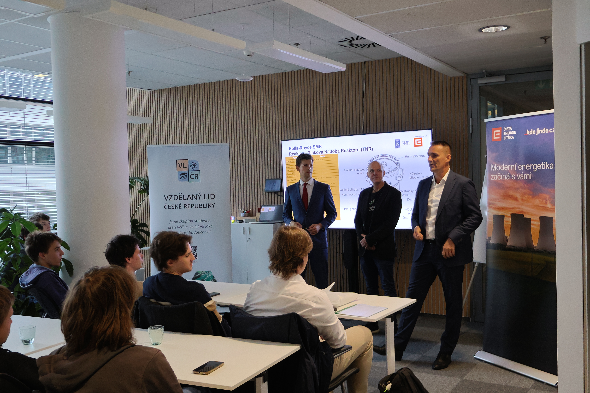
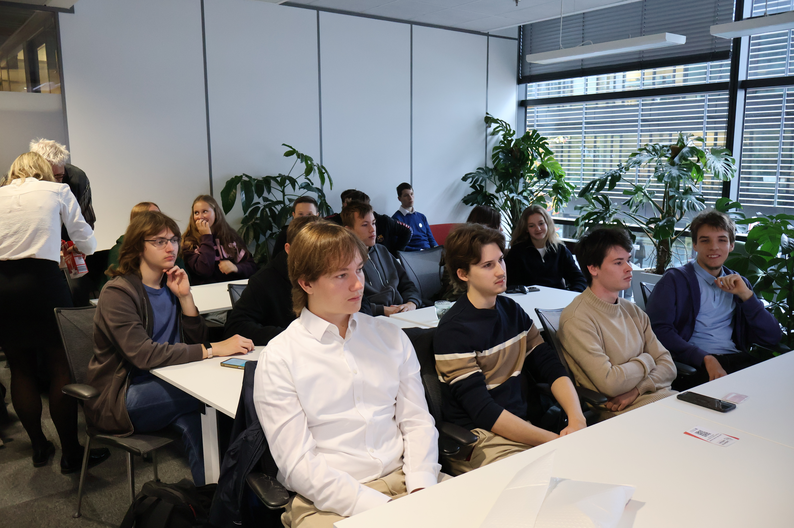
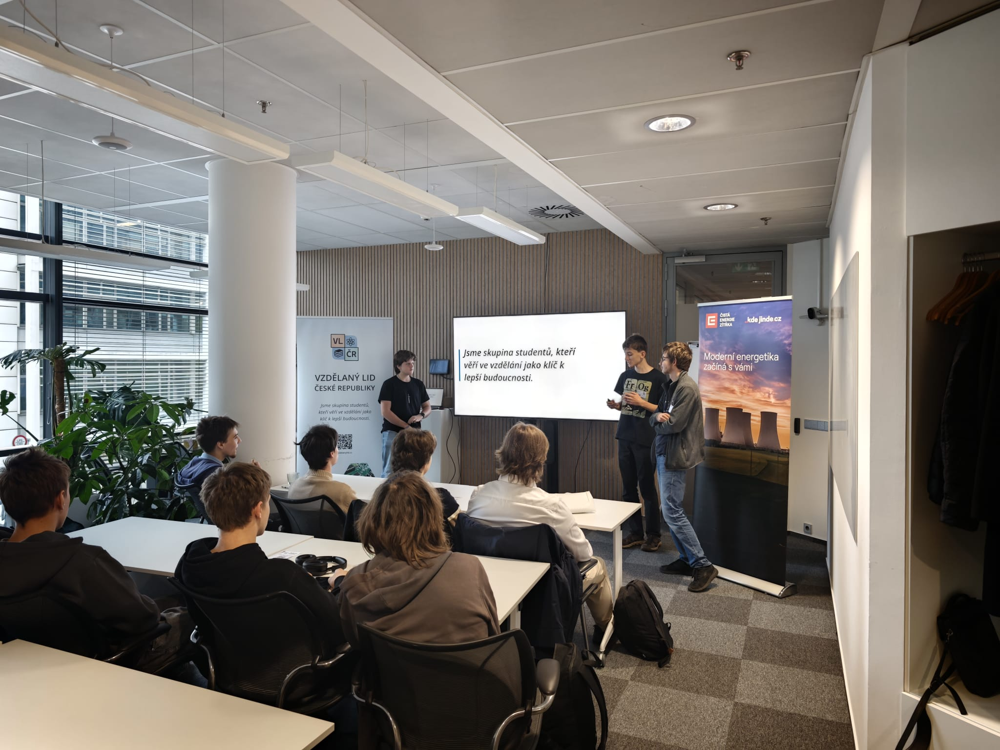
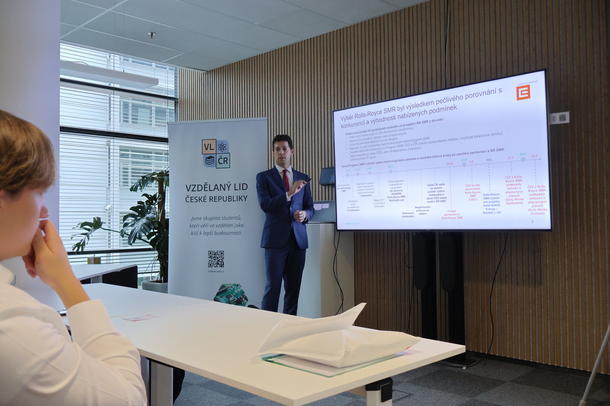
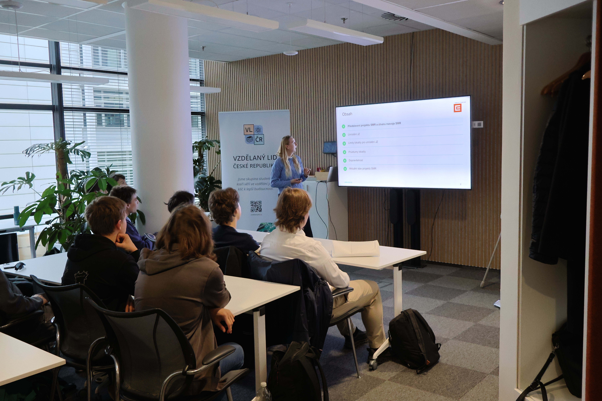
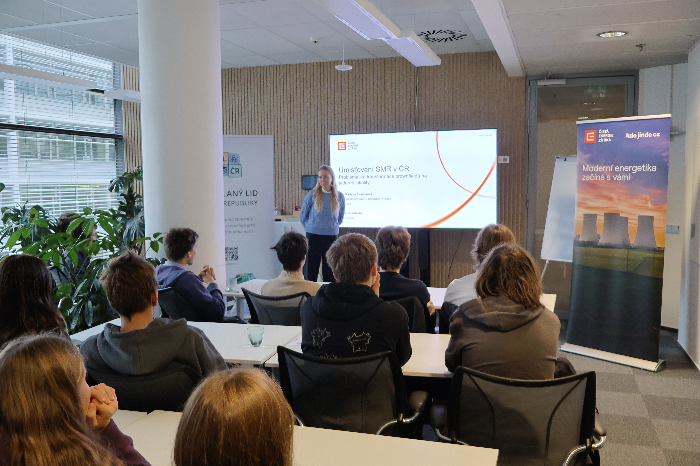
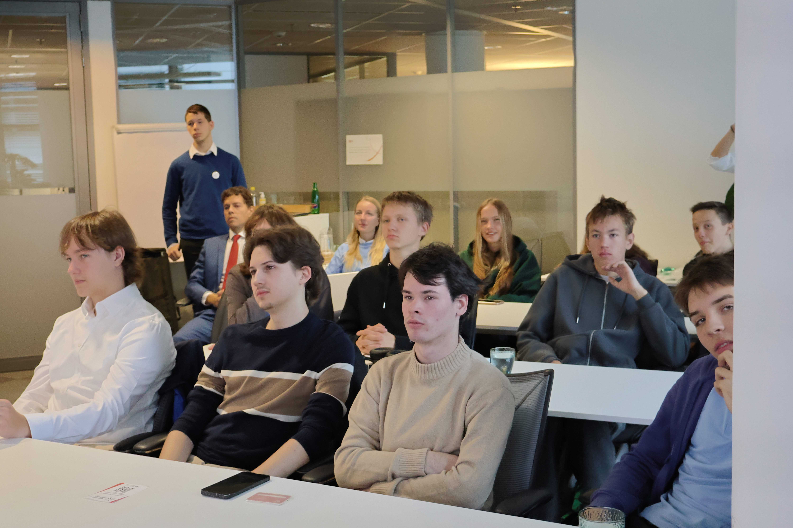
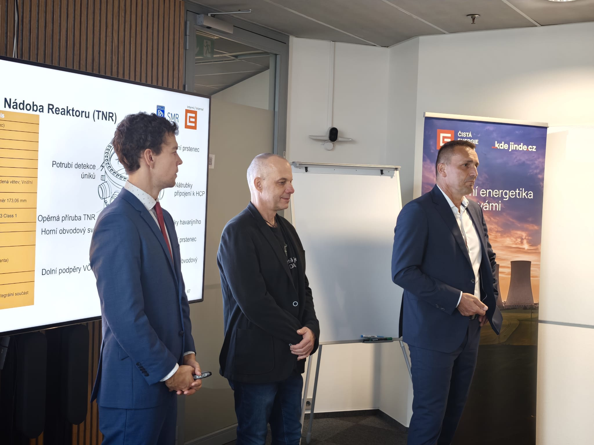
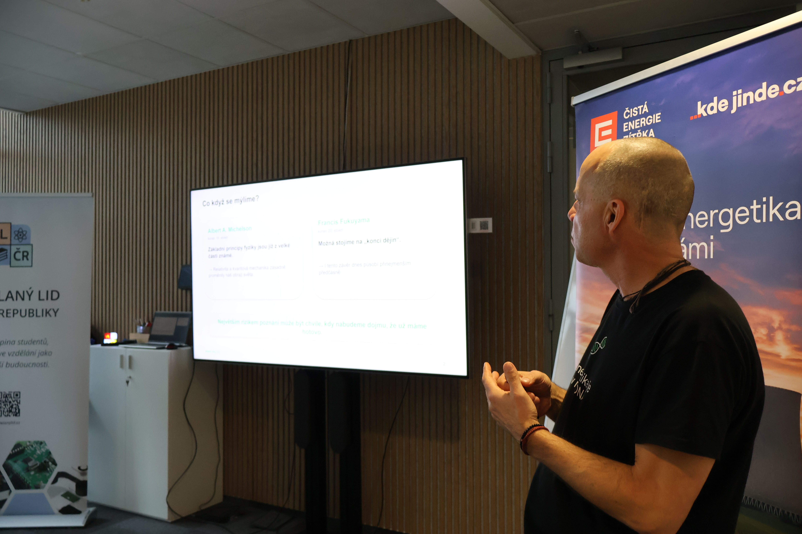
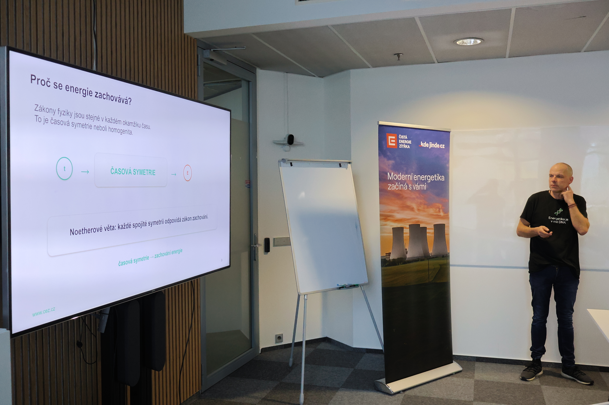
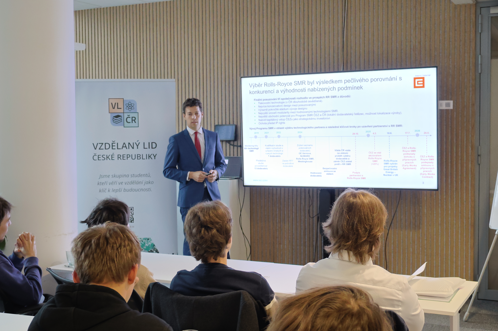
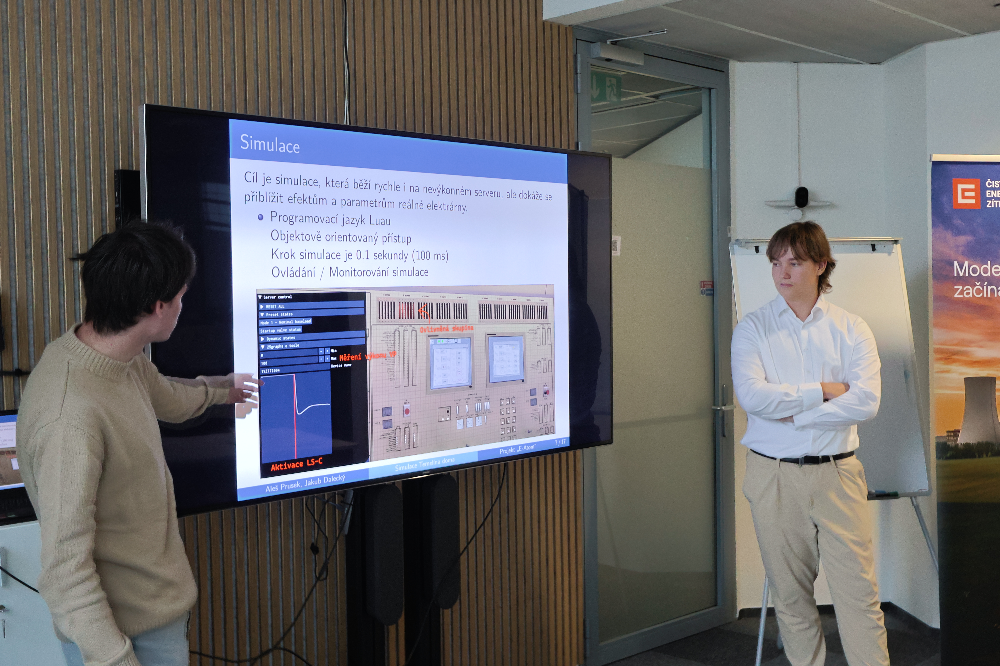
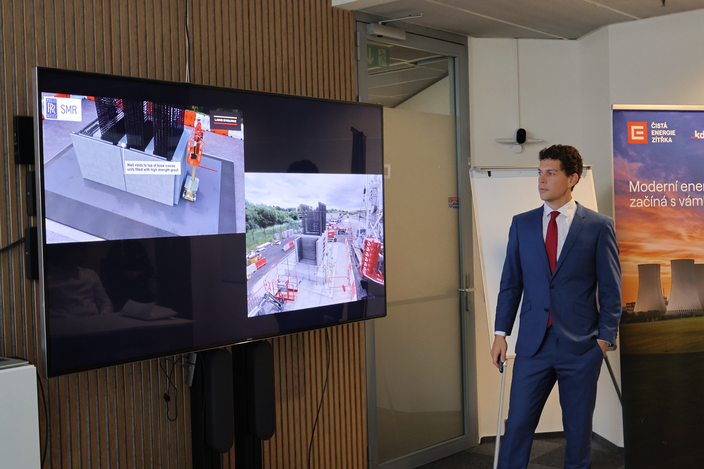
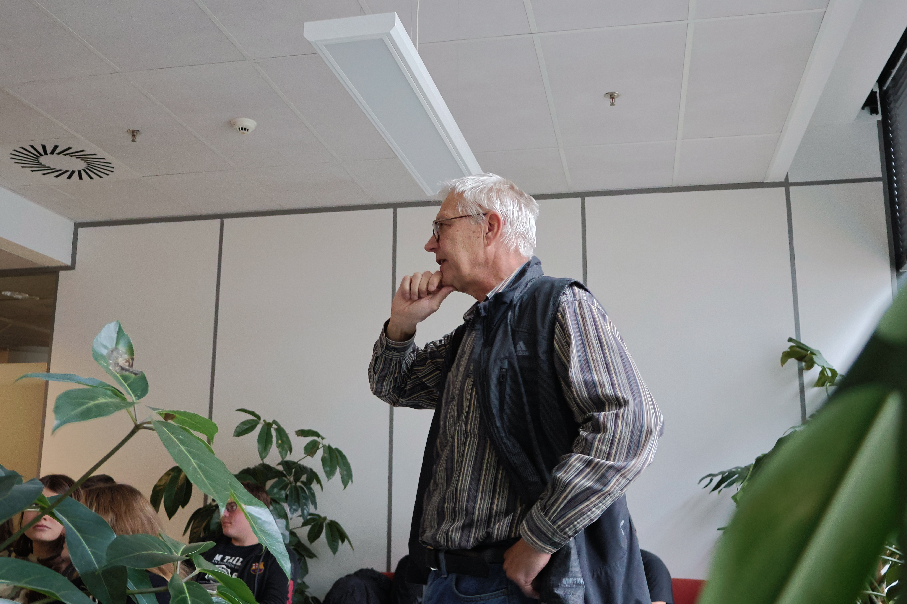
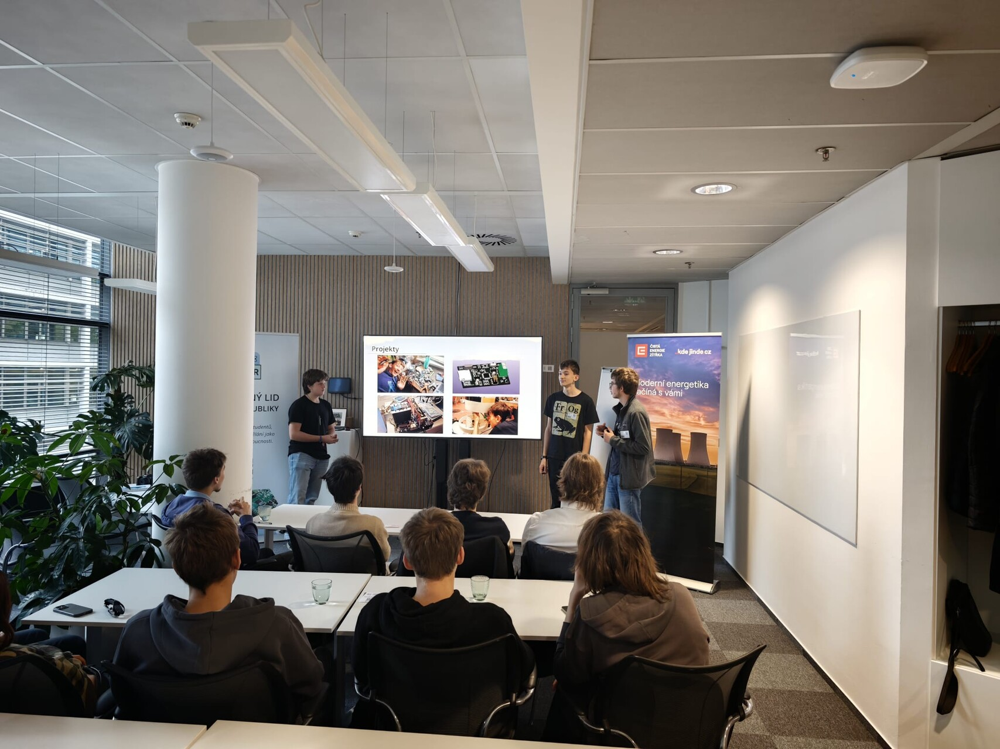